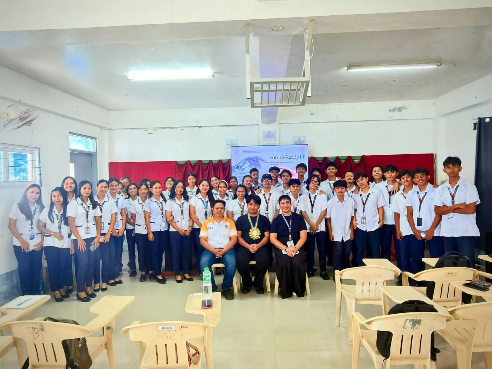

Group photo — Future-Ready IT Seminar, with the participants and guests
The Future-Ready IT Seminar brought our BSIT class together with invited guests for a session on getting ready for a career in information technology. The opening slide, “Future-Ready IT,” set the tone for the whole event: technology keeps changing, and the people who work in it have to be prepared to change with it.
Being future-ready means learning, adapting, and being willing to keep growing.
As fourth-year students who will soon be entering the industry, the seminar gave us a chance to think beyond the diploma — about building practical skills, staying adaptable as tools and trends shift, and recognizing the opportunities that are open to IT graduates.
It also reminded us that preparation is not only technical. Attending as one class, helping set up the room, and finishing with a group photo were small reminders that teamwork and professionalism are part of being ready for the workplace.
Technology changes quickly, so continuous learning is part of every IT career.
Practical, up-to-date skills matter as much as a degree when entering the industry.
Adaptability helps graduates take advantage of new opportunities in technology.
Teamwork and professionalism are part of being ready for the workplace.
Behind-the-scenes photos of our class preparing the room for the Future Ready IT Seminar.